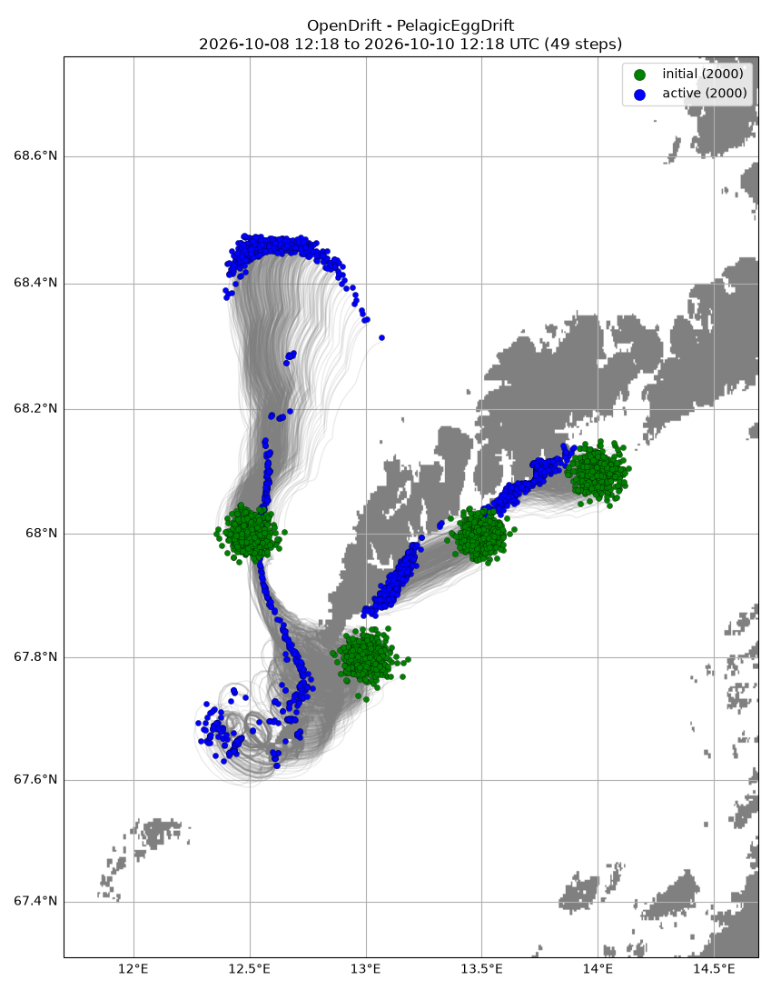
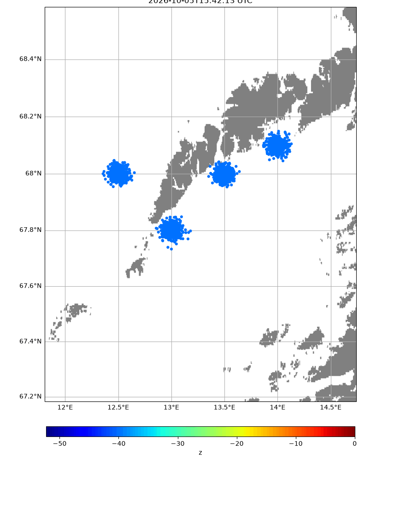
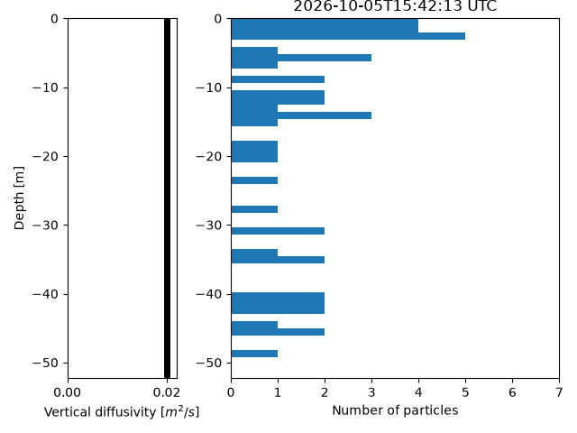

Note
Go to the end to download the full example code.
Cod egg
from opendrift.readers import reader_netCDF_CF_generic
from opendrift.models.pelagicegg import PelagicEggDrift
from datetime import datetime, timedelta
o = PelagicEggDrift(loglevel=20) # Set loglevel to 0 for debug information
# Forcing with Topaz ocean model and MEPS atmospheric model
o.add_readers_from_list([
'https://thredds.met.no/thredds/dodsC/cmems/topaz6/dataset-topaz6-arc-15min-3km-be.ncml',
'https://thredds.met.no/thredds/dodsC/mepslatest/meps_lagged_6_h_latest_2_5km_latest.nc'])
12:18:13 INFO opendrift:569: OpenDriftSimulation initialised (version 1.14.11 / v1.14.12-45-g2e494c3)
Adjusting some configuration
o.set_config('drift:vertical_mixing', True)
o.set_config('vertical_mixing:diffusivitymodel', 'windspeed_Sundby1983') # windspeed parameterization for eddy diffusivity
Vertical mixing requires fast time step
o.set_config('vertical_mixing:timestep', 60.) # seconds
spawn NEA cod eggs at defined position and time
time = datetime.now()
o.seed_elements(14. , 68.1, z=-40, radius=2000, number=500,
time=time, diameter=0.0014, neutral_buoyancy_salinity=31.25)
o.seed_elements(12.5, 68., z=-40, radius=2000, number=500,
time=time, diameter=0.0014, neutral_buoyancy_salinity=31.25)
o.seed_elements(13.5, 68., z=-40, radius=2000, number=500,
time=time, diameter=0.0014, neutral_buoyancy_salinity=31.25)
o.seed_elements(13., 67.8, z=-40, radius=2000, number=500,
time=time, diameter=0.0014, neutral_buoyancy_salinity=31.25)
12:18:13 INFO opendrift.models.basemodel.environment:203: Adding a global landmask from GSHHG
12:18:20 INFO opendrift.models.basemodel.environment:227: Fallback values will be used for the following variables which have no readers:
12:18:20 INFO opendrift.models.basemodel.environment:230: x_sea_water_velocity: 0.000000
12:18:20 INFO opendrift.models.basemodel.environment:230: y_sea_water_velocity: 0.000000
12:18:20 INFO opendrift.models.basemodel.environment:230: sea_surface_height: 0.000000
12:18:20 INFO opendrift.models.basemodel.environment:230: sea_surface_wave_significant_height: 0.000000
12:18:20 INFO opendrift.models.basemodel.environment:230: sea_ice_area_fraction: 0.000000
12:18:20 INFO opendrift.models.basemodel.environment:230: x_wind: 0.000000
12:18:20 INFO opendrift.models.basemodel.environment:230: y_wind: 0.000000
12:18:20 INFO opendrift.models.basemodel.environment:230: sea_floor_depth_below_sea_level: 100.000000
12:18:20 INFO opendrift.models.basemodel.environment:230: ocean_vertical_diffusivity: 0.020000
12:18:20 INFO opendrift.models.basemodel.environment:230: ocean_mixed_layer_thickness: 50.000000
12:18:20 INFO opendrift.models.basemodel.environment:230: sea_water_temperature: 10.000000
12:18:20 INFO opendrift.models.basemodel.environment:230: sea_water_salinity: 34.000000
12:18:20 INFO opendrift.models.basemodel.environment:230: surface_downward_x_stress: 0.000000
12:18:20 INFO opendrift.models.basemodel.environment:230: surface_downward_y_stress: 0.000000
12:18:20 INFO opendrift.models.basemodel.environment:230: turbulent_kinetic_energy: 0.000000
12:18:20 INFO opendrift.models.basemodel.environment:230: turbulent_generic_length_scale: 0.000000
12:18:20 INFO opendrift.models.basemodel.environment:230: upward_sea_water_velocity: 0.000000
Running model
o.run(duration=timedelta(hours=48), time_step=3600)
12:18:20 INFO opendrift:1921: Storing previous values of element property lon because of condition (('general:coastline_action', 'in', ['stranding', 'previous']), 'or', ('general:seafloor_action', 'in', ['previous']))
12:18:20 INFO opendrift:1921: Storing previous values of element property lat because of condition (('general:coastline_action', 'in', ['stranding', 'previous']), 'or', ('general:seafloor_action', 'in', ['previous']))
12:18:21 INFO opendrift:958: Using existing reader for land_binary_mask to move elements to ocean
12:18:21 INFO opendrift:989: All points are in ocean
12:18:21 INFO opendrift:2237: 2026-10-08 12:18:13.500062 - step 1 of 48 - 2000 active elements (0 deactivated)
12:18:21 INFO opendrift.readers:67: Opening file with xr.open_dataset
12:18:23 INFO opendrift.readers.reader_netCDF_CF_generic:340: Detected dimensions: {'x': 'x', 'y': 'y', 'time': 'time'}
12:18:23 INFO opendrift.readers:67: Opening file with xr.open_dataset
12:18:24 INFO opendrift.readers.reader_netCDF_CF_generic:340: Detected dimensions: {'time': 'time', 'x': 'x', 'y': 'y'}
12:18:26 WARNING opendrift.readers.interpolation.structured:63: Ensemble data currently not extrapolated towards seafloor
12:18:26 WARNING opendrift.readers.interpolation.structured:63: Ensemble data currently not extrapolated towards seafloor
12:18:27 WARNING opendrift.readers.interpolation.structured:63: Ensemble data currently not extrapolated towards seafloor
12:18:27 WARNING opendrift.readers.interpolation.structured:63: Ensemble data currently not extrapolated towards seafloor
12:18:27 INFO opendrift:2237: 2026-10-08 13:18:13.500062 - step 2 of 48 - 2000 active elements (0 deactivated)
12:18:29 WARNING opendrift.readers.interpolation.structured:63: Ensemble data currently not extrapolated towards seafloor
12:18:29 WARNING opendrift.readers.interpolation.structured:63: Ensemble data currently not extrapolated towards seafloor
12:18:29 INFO opendrift:2237: 2026-10-08 14:18:13.500062 - step 3 of 48 - 2000 active elements (0 deactivated)
12:18:31 WARNING opendrift.readers.interpolation.structured:63: Ensemble data currently not extrapolated towards seafloor
12:18:31 WARNING opendrift.readers.interpolation.structured:63: Ensemble data currently not extrapolated towards seafloor
12:18:32 INFO opendrift:2237: 2026-10-08 15:18:13.500062 - step 4 of 48 - 2000 active elements (0 deactivated)
12:18:34 WARNING opendrift.readers.interpolation.structured:63: Ensemble data currently not extrapolated towards seafloor
12:18:34 WARNING opendrift.readers.interpolation.structured:63: Ensemble data currently not extrapolated towards seafloor
12:18:34 INFO opendrift:2237: 2026-10-08 16:18:13.500062 - step 5 of 48 - 2000 active elements (0 deactivated)
12:18:36 WARNING opendrift.readers.interpolation.structured:63: Ensemble data currently not extrapolated towards seafloor
12:18:36 WARNING opendrift.readers.interpolation.structured:63: Ensemble data currently not extrapolated towards seafloor
12:18:36 INFO opendrift:2237: 2026-10-08 17:18:13.500062 - step 6 of 48 - 2000 active elements (0 deactivated)
12:18:38 WARNING opendrift.readers.interpolation.structured:63: Ensemble data currently not extrapolated towards seafloor
12:18:38 WARNING opendrift.readers.interpolation.structured:63: Ensemble data currently not extrapolated towards seafloor
12:18:38 INFO opendrift:2237: 2026-10-08 18:18:13.500062 - step 7 of 48 - 2000 active elements (0 deactivated)
12:18:40 WARNING opendrift.readers.interpolation.structured:63: Ensemble data currently not extrapolated towards seafloor
12:18:40 WARNING opendrift.readers.interpolation.structured:63: Ensemble data currently not extrapolated towards seafloor
12:18:40 INFO opendrift:2237: 2026-10-08 19:18:13.500062 - step 8 of 48 - 2000 active elements (0 deactivated)
12:18:42 WARNING opendrift.readers.interpolation.structured:63: Ensemble data currently not extrapolated towards seafloor
12:18:42 WARNING opendrift.readers.interpolation.structured:63: Ensemble data currently not extrapolated towards seafloor
12:18:42 INFO opendrift:2237: 2026-10-08 20:18:13.500062 - step 9 of 48 - 2000 active elements (0 deactivated)
12:18:44 WARNING opendrift.readers.interpolation.structured:63: Ensemble data currently not extrapolated towards seafloor
12:18:44 WARNING opendrift.readers.interpolation.structured:63: Ensemble data currently not extrapolated towards seafloor
12:18:45 INFO opendrift:2237: 2026-10-08 21:18:13.500062 - step 10 of 48 - 2000 active elements (0 deactivated)
12:18:47 WARNING opendrift.readers.interpolation.structured:63: Ensemble data currently not extrapolated towards seafloor
12:18:47 WARNING opendrift.readers.interpolation.structured:63: Ensemble data currently not extrapolated towards seafloor
12:18:47 INFO opendrift:2237: 2026-10-08 22:18:13.500062 - step 11 of 48 - 2000 active elements (0 deactivated)
12:18:49 WARNING opendrift.readers.interpolation.structured:63: Ensemble data currently not extrapolated towards seafloor
12:18:49 WARNING opendrift.readers.interpolation.structured:63: Ensemble data currently not extrapolated towards seafloor
12:18:49 INFO opendrift:2237: 2026-10-08 23:18:13.500062 - step 12 of 48 - 2000 active elements (0 deactivated)
12:18:51 WARNING opendrift.readers.interpolation.structured:63: Ensemble data currently not extrapolated towards seafloor
12:18:51 WARNING opendrift.readers.interpolation.structured:63: Ensemble data currently not extrapolated towards seafloor
12:18:51 INFO opendrift:2237: 2026-10-09 00:18:13.500062 - step 13 of 48 - 2000 active elements (0 deactivated)
12:18:54 WARNING opendrift.readers.interpolation.structured:63: Ensemble data currently not extrapolated towards seafloor
12:18:54 WARNING opendrift.readers.interpolation.structured:63: Ensemble data currently not extrapolated towards seafloor
12:18:54 INFO opendrift:2237: 2026-10-09 01:18:13.500062 - step 14 of 48 - 2000 active elements (0 deactivated)
12:18:56 WARNING opendrift.readers.interpolation.structured:63: Ensemble data currently not extrapolated towards seafloor
12:18:56 WARNING opendrift.readers.interpolation.structured:63: Ensemble data currently not extrapolated towards seafloor
12:18:56 INFO opendrift:2237: 2026-10-09 02:18:13.500062 - step 15 of 48 - 2000 active elements (0 deactivated)
12:18:58 WARNING opendrift.readers.interpolation.structured:63: Ensemble data currently not extrapolated towards seafloor
12:18:58 WARNING opendrift.readers.interpolation.structured:63: Ensemble data currently not extrapolated towards seafloor
12:18:58 INFO opendrift:2237: 2026-10-09 03:18:13.500062 - step 16 of 48 - 2000 active elements (0 deactivated)
12:19:00 WARNING opendrift.readers.interpolation.structured:63: Ensemble data currently not extrapolated towards seafloor
12:19:00 WARNING opendrift.readers.interpolation.structured:63: Ensemble data currently not extrapolated towards seafloor
12:19:00 INFO opendrift:2237: 2026-10-09 04:18:13.500062 - step 17 of 48 - 2000 active elements (0 deactivated)
12:19:02 WARNING opendrift.readers.interpolation.structured:63: Ensemble data currently not extrapolated towards seafloor
12:19:02 WARNING opendrift.readers.interpolation.structured:63: Ensemble data currently not extrapolated towards seafloor
12:19:02 INFO opendrift:2237: 2026-10-09 05:18:13.500062 - step 18 of 48 - 2000 active elements (0 deactivated)
12:19:05 WARNING opendrift.readers.interpolation.structured:63: Ensemble data currently not extrapolated towards seafloor
12:19:05 WARNING opendrift.readers.interpolation.structured:63: Ensemble data currently not extrapolated towards seafloor
12:19:05 INFO opendrift:2237: 2026-10-09 06:18:13.500062 - step 19 of 48 - 2000 active elements (0 deactivated)
12:19:07 WARNING opendrift.readers.interpolation.structured:63: Ensemble data currently not extrapolated towards seafloor
12:19:07 WARNING opendrift.readers.interpolation.structured:63: Ensemble data currently not extrapolated towards seafloor
12:19:07 INFO opendrift:2237: 2026-10-09 07:18:13.500062 - step 20 of 48 - 2000 active elements (0 deactivated)
12:19:09 WARNING opendrift.readers.interpolation.structured:63: Ensemble data currently not extrapolated towards seafloor
12:19:09 WARNING opendrift.readers.interpolation.structured:63: Ensemble data currently not extrapolated towards seafloor
12:19:09 INFO opendrift:2237: 2026-10-09 08:18:13.500062 - step 21 of 48 - 2000 active elements (0 deactivated)
12:19:12 WARNING opendrift.readers.interpolation.structured:63: Ensemble data currently not extrapolated towards seafloor
12:19:12 WARNING opendrift.readers.interpolation.structured:63: Ensemble data currently not extrapolated towards seafloor
12:19:12 INFO opendrift:2237: 2026-10-09 09:18:13.500062 - step 22 of 48 - 2000 active elements (0 deactivated)
12:19:14 WARNING opendrift.readers.interpolation.structured:63: Ensemble data currently not extrapolated towards seafloor
12:19:14 WARNING opendrift.readers.interpolation.structured:63: Ensemble data currently not extrapolated towards seafloor
12:19:14 INFO opendrift:2237: 2026-10-09 10:18:13.500062 - step 23 of 48 - 2000 active elements (0 deactivated)
12:19:16 WARNING opendrift.readers.interpolation.structured:63: Ensemble data currently not extrapolated towards seafloor
12:19:16 WARNING opendrift.readers.interpolation.structured:63: Ensemble data currently not extrapolated towards seafloor
12:19:16 INFO opendrift:2237: 2026-10-09 11:18:13.500062 - step 24 of 48 - 2000 active elements (0 deactivated)
12:19:18 WARNING opendrift.readers.interpolation.structured:63: Ensemble data currently not extrapolated towards seafloor
12:19:18 WARNING opendrift.readers.interpolation.structured:63: Ensemble data currently not extrapolated towards seafloor
12:19:19 INFO opendrift:2237: 2026-10-09 12:18:13.500062 - step 25 of 48 - 2000 active elements (0 deactivated)
12:19:21 WARNING opendrift.readers.interpolation.structured:63: Ensemble data currently not extrapolated towards seafloor
12:19:21 WARNING opendrift.readers.interpolation.structured:63: Ensemble data currently not extrapolated towards seafloor
12:19:21 INFO opendrift:2237: 2026-10-09 13:18:13.500062 - step 26 of 48 - 2000 active elements (0 deactivated)
12:19:23 WARNING opendrift.readers.interpolation.structured:63: Ensemble data currently not extrapolated towards seafloor
12:19:23 WARNING opendrift.readers.interpolation.structured:63: Ensemble data currently not extrapolated towards seafloor
12:19:23 INFO opendrift:2237: 2026-10-09 14:18:13.500062 - step 27 of 48 - 2000 active elements (0 deactivated)
12:19:25 WARNING opendrift.readers.interpolation.structured:63: Ensemble data currently not extrapolated towards seafloor
12:19:25 WARNING opendrift.readers.interpolation.structured:63: Ensemble data currently not extrapolated towards seafloor
12:19:25 INFO opendrift:2237: 2026-10-09 15:18:13.500062 - step 28 of 48 - 2000 active elements (0 deactivated)
12:19:28 WARNING opendrift.readers.interpolation.structured:63: Ensemble data currently not extrapolated towards seafloor
12:19:28 WARNING opendrift.readers.interpolation.structured:63: Ensemble data currently not extrapolated towards seafloor
12:19:28 INFO opendrift:2237: 2026-10-09 16:18:13.500062 - step 29 of 48 - 2000 active elements (0 deactivated)
12:19:30 WARNING opendrift.readers.interpolation.structured:63: Ensemble data currently not extrapolated towards seafloor
12:19:30 WARNING opendrift.readers.interpolation.structured:63: Ensemble data currently not extrapolated towards seafloor
12:19:30 INFO opendrift:2237: 2026-10-09 17:18:13.500062 - step 30 of 48 - 2000 active elements (0 deactivated)
12:19:32 WARNING opendrift.readers.interpolation.structured:63: Ensemble data currently not extrapolated towards seafloor
12:19:32 WARNING opendrift.readers.interpolation.structured:63: Ensemble data currently not extrapolated towards seafloor
12:19:32 INFO opendrift:2237: 2026-10-09 18:18:13.500062 - step 31 of 48 - 2000 active elements (0 deactivated)
12:19:35 WARNING opendrift.readers.interpolation.structured:63: Ensemble data currently not extrapolated towards seafloor
12:19:35 WARNING opendrift.readers.interpolation.structured:63: Ensemble data currently not extrapolated towards seafloor
12:19:35 INFO opendrift:2237: 2026-10-09 19:18:13.500062 - step 32 of 48 - 2000 active elements (0 deactivated)
12:19:37 WARNING opendrift.readers.interpolation.structured:63: Ensemble data currently not extrapolated towards seafloor
12:19:37 WARNING opendrift.readers.interpolation.structured:63: Ensemble data currently not extrapolated towards seafloor
12:19:37 INFO opendrift:2237: 2026-10-09 20:18:13.500062 - step 33 of 48 - 2000 active elements (0 deactivated)
12:19:39 WARNING opendrift.readers.interpolation.structured:63: Ensemble data currently not extrapolated towards seafloor
12:19:39 WARNING opendrift.readers.interpolation.structured:63: Ensemble data currently not extrapolated towards seafloor
12:19:39 INFO opendrift:2237: 2026-10-09 21:18:13.500062 - step 34 of 48 - 2000 active elements (0 deactivated)
12:19:41 WARNING opendrift.readers.interpolation.structured:63: Ensemble data currently not extrapolated towards seafloor
12:19:41 WARNING opendrift.readers.interpolation.structured:63: Ensemble data currently not extrapolated towards seafloor
12:19:41 INFO opendrift:2237: 2026-10-09 22:18:13.500062 - step 35 of 48 - 2000 active elements (0 deactivated)
12:19:43 WARNING opendrift.readers.interpolation.structured:63: Ensemble data currently not extrapolated towards seafloor
12:19:43 WARNING opendrift.readers.interpolation.structured:63: Ensemble data currently not extrapolated towards seafloor
12:19:44 INFO opendrift:2237: 2026-10-09 23:18:13.500062 - step 36 of 48 - 2000 active elements (0 deactivated)
12:19:46 WARNING opendrift.readers.interpolation.structured:63: Ensemble data currently not extrapolated towards seafloor
12:19:46 WARNING opendrift.readers.interpolation.structured:63: Ensemble data currently not extrapolated towards seafloor
12:19:46 INFO opendrift:2237: 2026-10-10 00:18:13.500062 - step 37 of 48 - 2000 active elements (0 deactivated)
12:19:49 WARNING opendrift.readers.interpolation.structured:63: Ensemble data currently not extrapolated towards seafloor
12:19:49 WARNING opendrift.readers.interpolation.structured:63: Ensemble data currently not extrapolated towards seafloor
12:19:49 INFO opendrift:2237: 2026-10-10 01:18:13.500062 - step 38 of 48 - 2000 active elements (0 deactivated)
12:19:51 WARNING opendrift.readers.interpolation.structured:63: Ensemble data currently not extrapolated towards seafloor
12:19:51 WARNING opendrift.readers.interpolation.structured:63: Ensemble data currently not extrapolated towards seafloor
12:19:51 INFO opendrift:2237: 2026-10-10 02:18:13.500062 - step 39 of 48 - 2000 active elements (0 deactivated)
12:19:53 WARNING opendrift.readers.interpolation.structured:63: Ensemble data currently not extrapolated towards seafloor
12:19:53 WARNING opendrift.readers.interpolation.structured:63: Ensemble data currently not extrapolated towards seafloor
12:19:53 INFO opendrift:2237: 2026-10-10 03:18:13.500062 - step 40 of 48 - 2000 active elements (0 deactivated)
12:19:55 WARNING opendrift.readers.interpolation.structured:63: Ensemble data currently not extrapolated towards seafloor
12:19:55 WARNING opendrift.readers.interpolation.structured:63: Ensemble data currently not extrapolated towards seafloor
12:19:55 INFO opendrift:2237: 2026-10-10 04:18:13.500062 - step 41 of 48 - 2000 active elements (0 deactivated)
12:19:59 WARNING opendrift.readers.interpolation.structured:63: Ensemble data currently not extrapolated towards seafloor
12:19:59 WARNING opendrift.readers.interpolation.structured:63: Ensemble data currently not extrapolated towards seafloor
12:19:59 INFO opendrift:2237: 2026-10-10 05:18:13.500062 - step 42 of 48 - 2000 active elements (0 deactivated)
12:20:02 WARNING opendrift.readers.interpolation.structured:63: Ensemble data currently not extrapolated towards seafloor
12:20:02 WARNING opendrift.readers.interpolation.structured:63: Ensemble data currently not extrapolated towards seafloor
12:20:03 INFO opendrift:2237: 2026-10-10 06:18:13.500062 - step 43 of 48 - 2000 active elements (0 deactivated)
12:20:05 WARNING opendrift.readers.interpolation.structured:63: Ensemble data currently not extrapolated towards seafloor
12:20:05 WARNING opendrift.readers.interpolation.structured:63: Ensemble data currently not extrapolated towards seafloor
12:20:05 INFO opendrift:2237: 2026-10-10 07:18:13.500062 - step 44 of 48 - 2000 active elements (0 deactivated)
12:20:07 WARNING opendrift.readers.interpolation.structured:63: Ensemble data currently not extrapolated towards seafloor
12:20:07 WARNING opendrift.readers.interpolation.structured:63: Ensemble data currently not extrapolated towards seafloor
12:20:07 INFO opendrift:2237: 2026-10-10 08:18:13.500062 - step 45 of 48 - 2000 active elements (0 deactivated)
12:20:09 WARNING opendrift.readers.interpolation.structured:63: Ensemble data currently not extrapolated towards seafloor
12:20:09 WARNING opendrift.readers.interpolation.structured:63: Ensemble data currently not extrapolated towards seafloor
12:20:10 INFO opendrift:2237: 2026-10-10 09:18:13.500062 - step 46 of 48 - 2000 active elements (0 deactivated)
12:20:12 WARNING opendrift.readers.interpolation.structured:63: Ensemble data currently not extrapolated towards seafloor
12:20:12 WARNING opendrift.readers.interpolation.structured:63: Ensemble data currently not extrapolated towards seafloor
12:20:12 INFO opendrift:2237: 2026-10-10 10:18:13.500062 - step 47 of 48 - 2000 active elements (0 deactivated)
12:20:14 WARNING opendrift.readers.interpolation.structured:63: Ensemble data currently not extrapolated towards seafloor
12:20:14 WARNING opendrift.readers.interpolation.structured:63: Ensemble data currently not extrapolated towards seafloor
12:20:14 INFO opendrift:2237: 2026-10-10 11:18:13.500062 - step 48 of 48 - 2000 active elements (0 deactivated)
12:20:17 WARNING opendrift.readers.interpolation.structured:63: Ensemble data currently not extrapolated towards seafloor
12:20:17 WARNING opendrift.readers.interpolation.structured:63: Ensemble data currently not extrapolated towards seafloor
Print and plot results. At the end the wind vanishes, and eggs come to surface
print(o)
o.plot(fast=True)
o.animation(fast=True, color='z')

===========================
--------------------
Reader performance:
--------------------
global_landmask
0:00:00.0 total
0:00:00.0 preparing
0:00:00.0 reading
0:00:00.0 masking
--------------------
https://thredds.met.no/thredds/dodsC/cmems/topaz6/dataset-topaz6-arc-15min-3km-be.ncml
0:01:03.6 total
0:00:00.0 preparing
0:01:03.4 reading
0:00:00.1 interpolation
0:00:00.0 interpolation_time
0:00:00.1 rotating vectors
0:00:00.0 masking
--------------------
https://thredds.met.no/thredds/dodsC/mepslatest/meps_lagged_6_h_latest_2_5km_latest.nc
0:00:42.2 total
0:00:00.0 preparing
0:00:42.1 reading
0:00:01.0 interpolation
0:00:00.0 interpolation_time
0:00:00.1 rotating vectors
0:00:00.0 masking
--------------------
Performance:
2:03.9 total time
7.2 configuration
0.3 preparing main loop
0.0 moving elements to ocean
1:56.3 main loop
3.5 updating elements
3.4 vertical mixing
0.0 cleaning up
--------------------
===========================
Model: PelagicEggDrift (OpenDrift version 1.14.11)
2000 active PelagicEgg particles (0 deactivated, 0 scheduled)
-------------------
Environment variables:
-----
land_binary_mask
1) global_landmask
-----
sea_floor_depth_below_sea_level
sea_surface_height
x_sea_water_velocity
y_sea_water_velocity
1) https://thredds.met.no/thredds/dodsC/cmems/topaz6/dataset-topaz6-arc-15min-3km-be.ncml
-----
x_wind
y_wind
1) https://thredds.met.no/thredds/dodsC/mepslatest/meps_lagged_6_h_latest_2_5km_latest.nc
-----
Readers not added for the following variables:
ocean_mixed_layer_thickness
ocean_vertical_diffusivity
sea_ice_area_fraction
sea_surface_wave_significant_height
sea_water_salinity
sea_water_temperature
surface_downward_x_stress
surface_downward_y_stress
turbulent_generic_length_scale
turbulent_kinetic_energy
upward_sea_water_velocity
Discarded readers:
Time:
Start: 2026-10-08 12:18:13.500062 UTC
Present: 2026-10-10 12:18:13.500062 UTC
Calculation steps: 48 * 1:00:00 - total time: 2 days, 0:00:00
Output steps: 49 * 1:00:00
===========================
12:20:17 WARNING opendrift:2613: Plotting fast. This will make your plots less accurate.
12:20:22 WARNING opendrift:2613: Plotting fast. This will make your plots less accurate.
12:20:23 INFO opendrift:4846: Saving animation to /root/project/docs/source/gallery/animations/example_codegg_0.gif...
12:20:43 INFO opendrift:3264: Time to make animation: 0:00:21.343605

12:20:45 INFO opendrift:4846: Saving animation to /root/project/docs/source/gallery/animations/example_codegg_1.gif...
12:20:55 INFO opendrift.models.oceandrift:644: Time to make animation: 0:00:10.310958

Total running time of the script: (2 minutes 50.867 seconds)